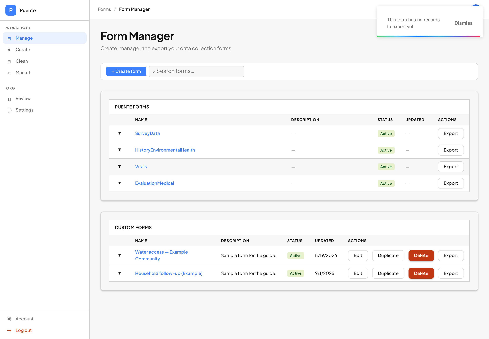

The ideaLa idea
Everything your surveyors collect lives in Puente. Export makes a copy of it as a spreadsheet file — a CSV — that you can open in Excel, Google Sheets or anything else, and send to a funder, a ministry or an analyst.
Todo lo que recogen tus encuestadores vive en Puente. Exportar hace una copia en forma de hoja de cálculo — un CSV — que puedes abrir en Excel, Google Sheets o cualquier otro programa, y enviar a un donante, a un ministerio o a un analista.
The export is a copy, not a window. Editing the spreadsheet changes nothing in Puente, and nothing you do in Puente afterwards changes the spreadsheet. It is a photograph of the moment you pressed the button.
La exportación es una copia, no una ventana. Editar la hoja de cálculo no cambia nada en Puente, y nada de lo que hagas después en Puente cambia la hoja. Es una fotografía del momento en que pulsaste el botón.
Most of this guide is about the small number of places where the copy is shaped differently from what you saw on the phone. None of them are mistakes. All of them will confuse somebody who is not expecting them, which is why they are written down.
La mayor parte de esta guía trata sobre los pocos lugares donde la copia tiene una forma distinta de lo que viste en el teléfono. Ninguno es un error. Todos van a confundir a alguien que no los espera, y por eso están escritos aquí.
Where the button isDónde está el botón
In Manage, open Form Manager. Every form has its own Export button — the four Puente forms at the top, and each of your own forms below.
En Manage, abre Gestor de formularios. Cada formulario tiene su propio botón Exportar — los cuatro formularios de Puente arriba, y cada uno de tus formularios debajo.

The file lands in your Downloads folder, named after the form and the moment you pressed
the button — SurveyData-Fri Sep 11 2026 14:40:39 GMT-0700 (Pacific Daylight Time).csv.
Long, but it means two exports of the same form never overwrite each other.
El archivo llega a tu carpeta de Descargas, con el nombre del formulario y el momento en
que pulsaste el botón — SurveyData-Fri Sep 11 2026 14:40:39 GMT-0700 (Pacific Daylight
Time).csv. Es largo, pero así dos exportaciones del mismo formulario nunca se sobrescriben.
A big organization's export can take a minute. The button says Loading… while it works. Pressing it again starts a second download rather than hurrying the first.
La exportación de una organización grande puede tardar un minuto. El botón dice Cargando… mientras trabaja. Pulsarlo otra vez inicia una segunda descarga en vez de apurar la primera.
One file per form, joined by one columnUn archivo por formulario, unidos por una columna
There is no single file containing everything, because the data is not shaped that way. A person is one thing; a blood-pressure reading taken during a visit is another. Each export is one of these:
No hay un archivo único con todo, porque los datos no tienen esa forma. Una persona es una cosa; una toma de presión durante una visita es otra. Cada exportación es una de estas:
| ExportExportación | One row is…Una fila es… |
|---|---|
SurveyData | a personuna persona |
HistoryEnvironmentalHealth | one environmental-health survey — household questions, recorded against a personuna encuesta de salud ambiental — preguntas de vivienda, registradas contra una persona |
Vitals | one set of vitals, taken onceun conjunto de signos vitales, tomado una vez |
EvaluationMedical | one medical evaluationuna evaluación médica |
| each of your own formscada formulario tuyo | one submission of that formun envío de ese formulario |
Every file except the people file already carries the person's details on each row — name, community, organization — copied in for you. So most of the time you do not need to join anything.
Todos los archivos menos el de personas ya traen los datos de la persona en cada fila — nombre, comunidad, organización — copiados para ti. Así que la mayoría de las veces no necesitas unir nada.
When you do need to join two files, the column to join on is objectId. It
means the same thing in every file: which person this row is about. The
supplementary file's own id is in a separate column called idSupplementary, so the two
can never be mistaken for each other.
Cuando sí necesites unir dos archivos, la columna para unirlos es objectId.
Significa lo mismo en todos los archivos: de qué persona trata esta fila. El id
propio del archivo suplementario está en otra columna, idSupplementary, para que nunca
se confundan.
One row per record, not per personUna fila por registro, no por persona
If you take vitals from the same person three times, the Vitals export has three rows for them. Their name, community and organization repeat on all three. That is correct — the repetition is what lets you filter or pivot on any of those columns.
Si le tomas los signos vitales a la misma persona tres veces, la exportación de Vitals tiene tres filas para ella. Su nombre, comunidad y organización se repiten en las tres. Eso es correcto — esa repetición es la que te permite filtrar o hacer tablas dinámicas con esas columnas.
Counting the rows of a Vitals export tells you how many readings were
taken, not how many people were seen. For people, count the distinct objectId values,
or count the rows of the people export.
Contar las filas de una exportación de Vitals te dice cuántas tomas se
hicieron, no a cuántas personas se atendió. Para personas, cuenta los valores distintos de
objectId, o cuenta las filas de la exportación de personas.
A record whose person is missing still exports. It arrives with the person columns blank rather than being left out of the file — collected work is never silently dropped from a download. A handful of these exist, mostly from an old syncing fault.
Un registro sin persona también se exporta. Llega con las columnas de la persona en blanco en vez de quedar fuera del archivo — el trabajo recogido nunca desaparece en silencio de una descarga. Existen unos pocos así, casi todos por una falla antigua de sincronización.
Identical people collapse into one rowLas personas idénticas se juntan en una fila
The people export removes rows that are identical to each other. If two records agree on every human fact — name, nickname, sex, date of birth, phone, education, occupation, community, city, province, cédula, surveyor, organization, coordinates, photo — they leave as one row.
La exportación de personas elimina las filas idénticas entre sí. Si dos registros coinciden en todos los datos humanos — nombre, apodo, sexo, fecha de nacimiento, teléfono, educación, ocupación, comunidad, ciudad, provincia, cédula, encuestador, organización, coordenadas, foto — salen como una sola fila.
This is usually what you want: it hides the exact duplicates that come from a form being submitted twice. But it has a consequence worth knowing.
Normalmente eso es lo que quieres: esconde los duplicados exactos que salen cuando un formulario se envía dos veces. Pero tiene una consecuencia que conviene saber.
The row count of the people export is not the number of records in Puente. Two duplicate residents become one row here while remaining two separate people in the app — each with their own history, each findable in search. The export tidies the symptom; only merging the records in Puente fixes the cause.
El número de filas de la exportación de personas no es el número de registros en Puente. Dos residentes duplicados se vuelven una fila aquí, pero siguen siendo dos personas distintas en la app — cada una con su historial, cada una encontrable en la búsqueda. La exportación arregla el síntoma; solo unir los registros en Puente arregla la causa.
Duplicates that differ in any detail — a nickname on one and not the other — are two rows, because the export cannot know they are the same person. Finding someone you already surveyed is about not creating them in the first place.
Los duplicados que difieren en cualquier detalle — un apodo en uno y no en el otro — son dos filas, porque la exportación no puede saber que son la misma persona. Encontrar a alguien que ya encuestaste trata de no crearlos desde el principio.
Age is a subtraction, not an ageLa edad es una resta, no una edad
The people export has an age column. It is calculated as
this year minus the birth year — nothing more.
La exportación de personas tiene una columna age. Se calcula como
este año menos el año de nacimiento — nada más.
So roughly anyone whose birthday falls later in the year reads one year too old. For
counting a community into age bands this is usually fine. For anything where a single year matters —
a paediatric cut-off, an eligibility threshold — use dob and calculate it yourself.
Entonces, más o menos cualquier persona cuyo cumpleaños cae más adelante en el año aparece
un año mayor. Para contar una comunidad por rangos de edad eso suele estar bien. Para algo donde un
año importa — un corte pediátrico, un umbral de elegibilidad — usa dob y calcúlalo tú.
Two more things about that column. If a surveyor typed an age directly, that number is kept and the date of birth is ignored. And if a date of birth cannot be read at all, the age comes out blank rather than guessed — a wrong age in a spreadsheet has nothing marking it as a guess.
Dos cosas más sobre esa columna. Si un encuestador escribió una edad directamente, ese número se conserva y la fecha de nacimiento se ignora. Y si una fecha de nacimiento no se puede leer, la edad sale en blanco en vez de adivinada — una edad equivocada en una hoja de cálculo no lleva nada que la marque como suposición.
Accents survive in some files and not in othersLos acentos sobreviven en unos archivos y en otros no
This is the one that quietly breaks spreadsheets, so it is worth a minute.
Este es el que rompe hojas de cálculo en silencio, así que vale un minuto.
In the four Puente exports, text comes out exactly as it was collected —
Comunidad Peña, Baní. In an export of your own form,
accents are stripped from both the answers and the column headings:
En las cuatro exportaciones de Puente, el texto sale tal como se recogió —
Comunidad Peña, Baní. En la exportación de un formulario
tuyo, los acentos se quitan tanto de las respuestas como de los títulos de
columna:
The same community is therefore spelled two ways across two files —
Peña in the Vitals export and Pena in your custom-form export. A
VLOOKUP or a pivot that joins on community name will silently match nothing. Join on
objectId instead; it is unaffected.
Por eso la misma comunidad se escribe de dos maneras en dos archivos —
Peña en la exportación de Vitals y Pena en la de tu formulario. Un
BUSCARV o una tabla dinámica que una por nombre de comunidad no va a coincidir con
nada, sin avisar. Une por objectId, que no se ve afectado.
The stripping exists because some of the tools these files are opened in mangle accented characters in headings. It is applied to custom forms only.
Ese cambio existe porque algunas de las herramientas donde se abren estos archivos dañan los caracteres acentuados en los títulos. Solo se aplica a los formularios personalizados.
Your questions become the column headingsTus preguntas se vuelven los títulos de columna
When you export one of your own forms, each question becomes one column, headed by the question's label. This is the single strongest reason to write a clear question in the Form Creator: whatever you type there is what an analyst reads at the top of a column, months later, with no other context.
Cuando exportas un formulario tuyo, cada pregunta se vuelve una columna, con el título de la pregunta como encabezado. Esta es la razón más fuerte para escribir una pregunta clara en el Creador de formularios: lo que escribas ahí es lo que un analista va a leer arriba de una columna, meses después, sin ningún otro contexto.
If you rename a question after people have already answered it, older submissions still carry the old wording. The export puts them all in one column under the current label — you do not get one half-empty column per wording.
Si cambias el nombre de una pregunta después de que ya la respondieron, los envíos anteriores todavía llevan el texto viejo. La exportación los pone todos en una sola columna con el título actual — no te quedan dos columnas medio vacías.
If one of your questions has the same name as a built-in column —
communityname, say — your version is renamed
communityname_from_custom_form so the two never overwrite each other. Both columns
are in the file.
Si una de tus preguntas tiene el mismo nombre que una columna
integrada — communityname, por ejemplo — la tuya se renombra
communityname_from_custom_form para que no se sobrescriban. Las dos columnas están en
el archivo.
What is not in the fileQué no está en el archivo
- Photos and signatures. The people export carries a
pictureURLcolumn — a link, not the image. Custom-form exports carry neither. Fotos y firmas. La exportación de personas trae una columnapictureURL— un enlace, no la imagen. Las exportaciones de formularios propios no traen ninguna de las dos. - The app's internal ids. The ids a phone mints while offline are how a re-sent record is recognised instead of duplicated. They are load-bearing in the app and meaningless in a spreadsheet, so they are left out. Los ids internos de la app. Los ids que crea un teléfono sin señal son la forma de reconocer un registro reenviado en vez de duplicarlo. Son esenciales en la app y no significan nada en una hoja de cálculo, así que no se incluyen.
- Anything from another organization. An export contains your organization's records and nothing else. Nada de otra organización. Una exportación contiene los registros de tu organización y nada más.
Empty is not the same as failedVacío no es lo mismo que fallido
Two different messages, two different meanings. They used to say the same thing, and a coordinator whose download had crashed spent a morning looking for records that were never missing.
Dos mensajes distintos, dos significados distintos. Antes decían lo mismo, y una coordinadora cuya descarga había fallado pasó una mañana buscando registros que nunca faltaron.

A file that opens with only a heading row is a third, different thing: a real answer meaning zero rows matched. That is a file, and it saves.
Un archivo que abre solo con la fila de títulos es una tercera cosa distinta: una respuesta real que significa cero filas coincidieron. Eso sí es un archivo, y se guarda.
What one export coversQué cubre una exportación
Organizations get written down inconsistently in the field. The same organization might
appear on its records as DR Missions, DRMT, or a spelling somebody typed
once on a phone. Your export follows every spelling your organization uses, not
just the one on your account.
Las organizaciones se escriben de forma inconsistente en el campo. La misma organización
puede aparecer en sus registros como DR Missions, DRMT, o una escritura que
alguien tecleó una vez en un teléfono. Tu exportación sigue todas las escrituras que usa tu
organización, no solo la de tu cuenta.
This is not a small detail. One real organization exported 12 rows by name where 623 existed, because 611 of its records carried an abbreviation instead. If a partner tells you their export looks too small, that is the first thing to check with us.
No es un detalle menor. Una organización real exportó 12 filas por nombre cuando existían 623, porque 611 de sus registros llevaban una abreviatura. Si un socio te dice que su exportación se ve muy pequeña, eso es lo primero que hay que revisar con nosotros.
Rules of thumbReglas prácticas
- Count people in the people file; count events in the event files.Cuenta personas en el archivo de personas; cuenta eventos en los archivos de eventos.
- Join on
objectId, never on a name or a community.Une porobjectId, nunca por un nombre o una comunidad. - Use
dobwhen a single year matters;ageis a subtraction.Usadobcuando un año importe;agees una resta. - Write the question you want to read as a column heading a year from now.Escribe la pregunta que quieras leer como título de columna dentro de un año.
- "No records yet" and "could not be completed" mean different things. Only the second one is worth worrying about.«Todavía no tiene registros» y «no se pudo completar» significan cosas distintas. Solo la segunda merece preocupación.
- The export is a copy. Fix data in Puente, then export again.La exportación es una copia. Arregla los datos en Puente y vuelve a exportar.